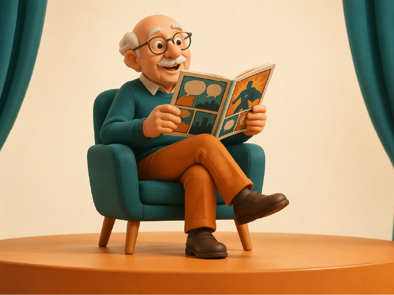
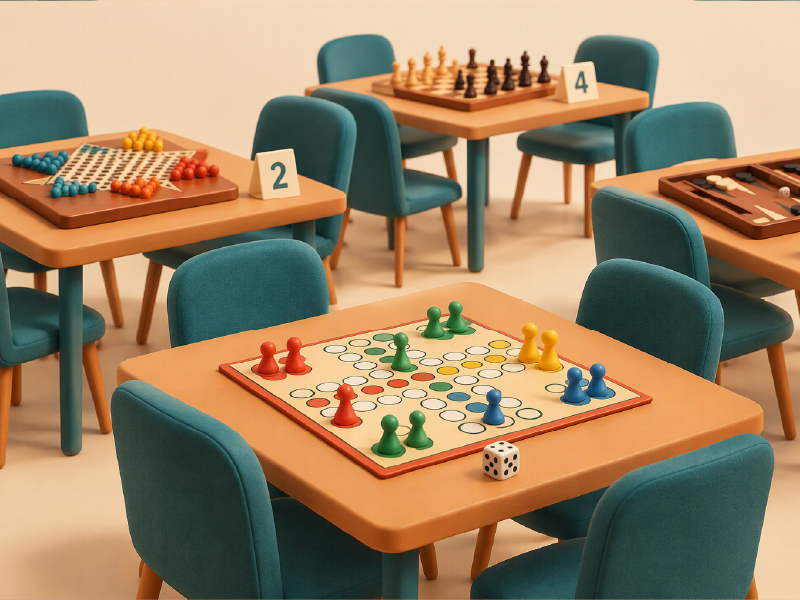
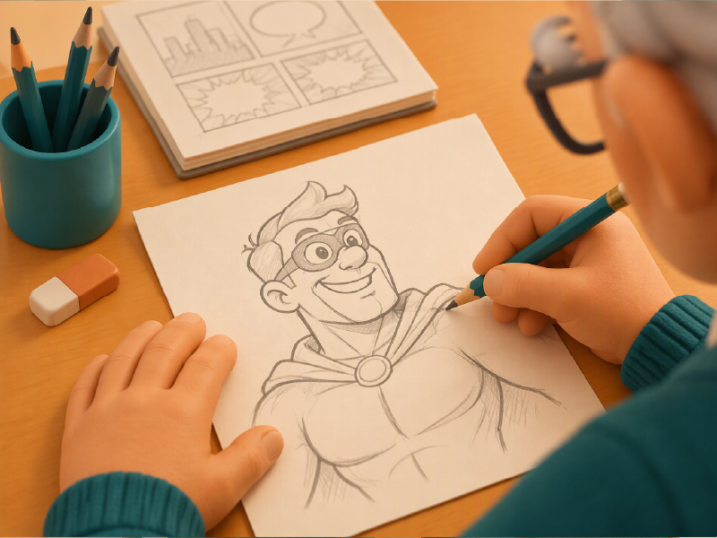

Das Programm am 28. Februar
Von 10 bis 18 Uhr: Lesungen, Spiele, Kurse und zwischendurch eine Tasse Kaffee. Sie müssen sich für nichts anmelden – außer für das Turnier.
Unsere drei Höhepunkte
-

11:00 Uhr
Lesung aus Fix und Foxi
Mit verteilten Stimmen und viel Gefühl: Klaus-Dieter Brandt bringt die Füchse aus dem Fuchswald zurück auf die Bühne.
-

12:00 Uhr
Das große Mensch-ärgere-Dich-nicht-Turnier
40 Tische, 160 Spielerinnen und Spieler und ein Wanderpokal aus Blech. Wer wird Hamburger Ärger-Meister 2027?
Im Ablaufplan ansehen: Das große Mensch-ärgere-Dich-nicht-Turnier
-

14:00 Uhr
Zeichenkurs „Comicfiguren wie früher“
Keine Vorkenntnisse nötig: Mit Kreisen, Bögen und etwas Geduld entsteht Ihre eigene Comicfigur – zum Mitnehmen.
Im Ablaufplan ansehen: Zeichenkurs „Comicfiguren wie früher“
Der Ablauf im Überblick
Auf kleinen Bildschirmen können Sie die Tabelle seitlich verschieben.
| Uhrzeit | Programmpunkt | Ort/Bühne | Beschreibung |
|---|---|---|---|
| Einlass und Begrüßungskaffee | Foyer Süd | Wir empfangen Sie mit Filterkaffee, Tee und Butterkuchen. Garderobe und Programmhefte gibt es gleich am Eingang. | |
| Feierliche Eröffnung | Große Bühne | Die Gründer Gerda und Heinz Petersen eröffnen die Messe – mit einer kleinen Geschichte aus ihrer Sammlung. | |
| Lesung aus alten Fix-und-Foxi-Heften | Lesesalon | Schauspieler Klaus-Dieter Brandt liest mit verteilten Stimmen. Lupen und Großdruck-Kopien liegen bereit. | |
| Mensch-ärgere-Dich-nicht-Turnier | Spielhalle, Tische 1–40 | Bis zu 160 Teilnehmer, Anmeldung bis 11:45 Uhr am Infostand. Ärgern ist erlaubt, Schummeln nicht. | |
| Mittagspause mit Erbsensuppe | Kantine Nord | Erbsensuppe mit Würstchen, auch vegetarisch. Dazu Kuchen, Kaffee und Limonade wie früher. | |
| Zeichenkurs „Comicfiguren wie früher“ | Atelier | Zeichnerin Marlene Oswald zeigt Schritt für Schritt, wie man Füchse, Igel und Ritter zeichnet. Stifte und Papier stellen wir. | |
| Quiz „Kennen Sie dieses Spiel?“ | Große Bühne | Wir zeigen Spielschachteln und Heftrücken – Sie raten. Gespielt wird in Tischgruppen, mit Hilfe des Publikums. | |
| Comic-Tauschbörse | Halle B, Tauschecke | Bringen Sie Ihre doppelten Hefte mit. Unsere Experten schätzen auf Wunsch kostenlos den Zustand. | |
| Abschluss und Verlosung | Große Bühne | Wir verlosen Spiele-Klassiker und eine gebundene Mosaik-Sammlung. Das Los ist in jeder Eintrittskarte enthalten. |
Den ganzen Tag geöffnet
Spieltische
Über 80 Tische mit Klassikern wie Malefiz, Halma, Mühle, Fang den Hut und Mikado. Einfach hinsetzen und mitspielen.
Comic-Lesecafé
Gemütliche Sessel, gutes Licht und Lupen: Blättern Sie in Fix und Foxi, Mosaik, Sigurd, Akim, Petzi und Lurchi.
Ruheraum
Wenn es zu trubelig wird: Im Ruheraum gibt es bequeme Stühle, Wasser und keine Würfelgeräusche.